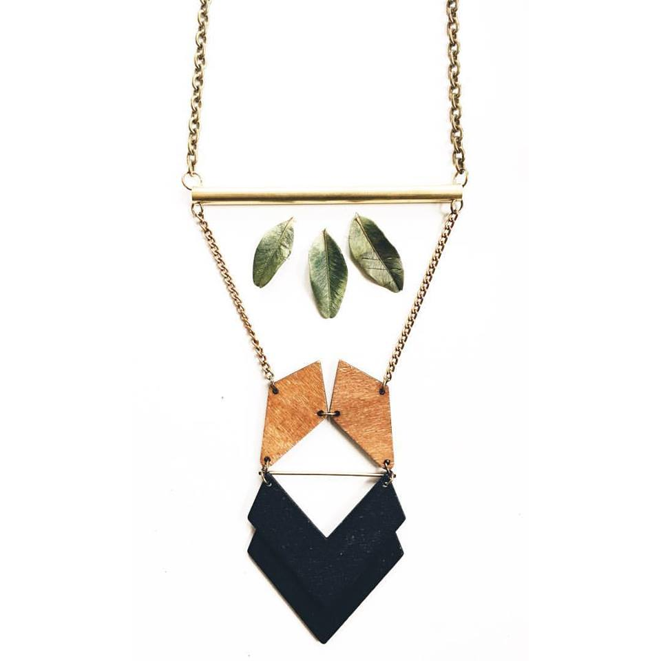

Influenced by the world of broadcasting and fashion, blogger, Hannah Pflederer, was stunned at the news of a beacon of light’s wrongful death. Kaylyn Pryor, an Evanston native, was a fresh face in modeling. She, a polymath of sorts, also delved in dancing, choreography, poetry, and drawing. Following the crushing news, Hannah practiced empathy by placing herself in the mind of an violently interrupted dream. This act of erroneous ferocity has played on too long in the city of Chicago, and Hannah - with the help of Liv Roskos, created the Full Color Life Project. Read more here.

We are loving the earthy and symmetry of the new digs from Milwaukee’s Jecilia.Negron’s newest project Inaru Shop which launched yesterday! According to Negron, “I'na'ru is a vibrant y cultural inspired handmade jewelry line. It is a collection of radical, dope, powerful and colorful gems that honor all the fly mujeres.” It most definitely is. You can tell the intricacy of her designs and the inspiration from natural materials, and the spirit in these pieces. Check out more here.
One of our favorite vibe dealers, Drea Smith, has been dealing vibes since back in the day when we interviewed her in our first issue with He Say, She Say, and again with the group Pyyramids. Now she is a solo act a part of the Medicine Woman collective and making some of her best music to date. She just released her latest project, the “Triple Goddess,” a three song EP. Read more and check out the "Triple Goddess" EP here.
SoloSAM knows a thing or two about shaking off the haters and dropping bangers and bars. His latest song “Getting Somewhere” opens with orchestral string plucking layered with his deep booming cadence. Big ups to his producer Ad Astra. The song isn’t boastful, but honest about a young rapper rising and pushing himself to go against the grain of rap music and the current state of music these days. He hits your ears with the truth, wrapped in a bit of humor. “I’m asking if Aspen is really as cold as the shit I spit.” It’s cold. Don’t sleep on this or SoloSAM, this emcee is definitely going somewhere. Come out Friday March 25th if you’re in Chicago and check out SoloSAM perform at our March Madness event and check out "Getting Somewhere" here.GALA FEATURE: Rhea The Second has been a musical sponge since her adolescence. She has been exposed to and inspired by everything from funk and pop to jazz and ambient synths. She doubles as a musician and a producer, and is one of the women creatives in Chicago making musical moves throughout the scene. She says the city has embraced her and elevated her journey since her move from Detroit years ago, and it has further ignited her passion. With a new project in production, Rhea is offering up her truth and a sound that has been budding for years and laying the groundwork for her kingdom. Check out our mini Q&A with Rhea here.
Chicago transplant emcee D-Win is a classic man. Which is why for his latest EP release “Kubrick” he turned to the classic film director for inspiration. The EP was inspired by the works of the late film director Stanley Kubrick and the current events taking place in America. The project is a collaboration between rapper D-Win and producer Tek X and it explores the subtle methods Kubrick used to make his audience aware of pivotal events that took place in history, and in present culture.
The 6-song EP goes hard and is definitely grandiose in production with big sound that definitely alludes to the feel of a film score, and each song tells a story.“Walking on Water” cues in the violins, “Censor” touches on the Black Lives Matter movement and lives lost, and the entire EP talks about a young man who came to Chicago from Indiana at 18 years old to chase a dreams and make moves, and he is doing just that. Check out Kubrick here.
Minnesota knows good hip hop, one of them is Minneapolis’ lead emcee of the Crunchy Kids, Chance York. He has been having a good year and has been doing some personal music work outside of Crunchy Kids and his past group Parallax. He released a couple of solo tracks with more to come, “Harden the Paint” is his latest release. It features a darker side of York. His cadence is sinister, and gritty, but the lyrics are optimistic. “Remember the days of pagers and pay phones?” We’ve come a long way technologically, and York has come a long way musically and we look forward to hearing more from him. Check out “Harden the Paint” here.
Earlier this month LA artist, Dev Mo, got sultry in her latest video “Chinese” featuring Juco Law. The video, her flow and the beat are smooth and funky. The deliverance of her bars are quick tongued, and the content taboo as Dev shows some love to the ladies. We caught up with Dev Mo, back when she was in Chicago opening for Angel Haze, where she brought Juco Law up on stage to perform with her. This is definitely a good pairing musically, Law has a flow that is just as seamless. Dev must have picked up a few pointers from Haze on T&A because this video and song has us swooning. Check out Chinese here.
Awhile back we featured some looks from the 17 year old Oshkosh based fashion designer Nathaniel Coleman’s line SMPGN, which stands for “Small Minded People Get Nowhere.” The brand is back with some fresh and cozy looks this winter for their Holiday Lookbook and Collection “We Don’t Get Tired.” But don’t worry if you do get tired you can always fall back on the soft exteriors of their clothes. The line features a softer look with thick corduroy pants, and a terry cloth, lamb inspired hoodie. The army green jacket adds a bit of edge to the over all look. Check out more here.
Check out this new gem "Alive" from Chicago based singer Via Rosa. Rosa has been a favorite of our lately with her sultry serenades and songs that seep in your soul. She's done work with Them People, her new duo Drama, and has been making waves solo dolo. Alive and well. Let this one steep because the sound so sweet. Check out alive here.
Milwaukee artist and Fresh Cut Collective co-founder, Adebisi Agoro,has returned to the Milwaukee hip hop scene after a brief hiatus spent in New York. BLAX, Agoro's stage name,released his first EP Archangels last spring and has been performing across Wisconsin throughout 2015. This month, BLAX released a new project that differs from his signature sound...[read more]
SoloSam is a powerhouse emcee out of Chicago who has been making waves in the underground music scene with his heavy hitting beats and lyrically advanced flows. If you slept on SoloSam, you should wake up. He is the kind of musician who can successfully release a fire track like “Delete Myself,” and literally do just that after it drops. Call it a social media blackout...[read more]
Chicago based artist, Daryn Alexus, offers up a positive and surprisingly upbeat response to life's stresses. “I Ain't Got It” is the second song released as part of her Wildflower series, the follow up to her widely successful EP entitled Green. Wildflowers is a concept Alexus uses to explore and approach her music in innovative ways. Originally from D.C...[read more]
The soulful songstress, L11, came to Chicago with a dream and a drive to change her life and evolve her music. Originally hailing from Minnesota, she has seen success solo and as a part of the Smartmouf Collective spearheaded by Ace Da Vinci. She released her first self-titled EP this past summer, and fronts the Culturati Blog who we teamed up with to throw a fall music showcase, “Changing Seasons,” at HQ in Wicker Park Friday...[read more]
17 year old Nate Coleman from Oshkosh, Wisconsin is anything but small minded. This kid knows what’s up in style, spirit, and passion. He poured his sweat and tears into his line “Small Minded People Get Nowhere,” interesting name choice by the way, SMPGN for short. He is currently pursuing a fashion marketing degree. All of the clothing was cut and sewn from his hometown...[read more]
Just Visiting, a company based out of Toronto, Canada has cleverly juxtaposed the popular Chicago Bulls logo with the style of the great Picasso to create this rendition of the best sports art wear there is and called it “Picasso Bulls.” This might just be our favorite jersey worthy Bulls garb we’ve seen. Just enough artful wittiness for even non sports fans to get behind. The t-shirt comes in black and white, no jerseys yet, although fingers crossed maybe it’s in the works...[read more]
Chicago Rapper Roy French of DripGang makes a splash with his newest project “Glo” just in time for summer’s end. This video is dripping with steez - not just anybody can make frolicking in the rain look so refreshing. Though surely many might do the same if they were drinking a bottle of Jim Beam. DJ Earn Money makes a cameo as well under his umbrella ayeee. Don’t we all just want the glow up? This song rides smooth as French brings splash paradise to your ears. Check it out here.
This week Webster X released a stunning new video, shot by Cody LaPlant, for his latest release "Lately." Webster emerges, unearthed from the ground, struggling to find his footing shot amidst a beautiful landscape backdrop. He discovers his tribe, consisting of members of his Milwaukee collective New Age Narcissism. Carried on their backs like a king, very Where The Wild Things Are, Webster X is regal in this video. There is a certain mysticism to the video as well, as Siren and her white horse appear to be the reason Webster was in the ground in the first place, after all her song is called "Queen Medusa" "Lately" is Webster X's best release to date, following "Doomsday," another grand visual project and song. Lately Webster X has been at the top of his music career, Milwaukee and music scenes, making it well and known that he is here to stay. Check out our Q&A we did with Webster X in our Milwaukee issue here, and the video for "Lately" here.
Sonny Apollo’s musical influence range looks and sounds like a wide array of melodies and genres, something right out of a Showtime at The Apollo showcase with only the good parts. This funky former gypsy grew up musically inclined and has blossomed into quite the performer who is not only making moves in Chicago, but around the globe with fans overseas as well. He released his debut EP Gypsy Fire last year in the midst of personal turmoil and many setbacks, yet he prevailed and was able to show the world what he was made of. Having done much growth and evolution since his first release, Apollo is now working on his second releaseAdventures in Paradise, which delves a bit deeper into who he is as a person. Apollo is performing this Thursday at Jerry’s in Wicker Park in Chicago, check out our mini Q&A with Sonny Apollo here.
Michigan's Tunde Olanrian has just released a new song, "Namesake" from his upcoming debut album "Transgressor." This song goes goes hard with a mission. The intro hooks you with his name, Babatunde, his namesake, on the backtrack repeating, then the beat drops and is heavy hitting. Olaniran, who slayed with one of his earlier debut songs "Brown Boy", stays true to his concious rap and identity politics. In "Namesake" he raps about staying true to oneself, and about his history dealing with issues of self. If i can be me then you can be yourself, wouldn't that be easy? It's like we're never satisfied," he says. The message is simple, be yourself, and self appropriate. Check out the song below. If you want to learn more about Tunde, check out the Q&A we did with him here.
“Hear We Are” is a multi-media project created by artist and educator, L. David Stewart. He created the project to begin a conversation around the stereotypes and stigma that black male educators face today in society. The project includes photography, video and interviews with various male educators in the city of Chicago, and the project will be expanding to other cities in the future. This project is especially pertinent not only due to our struggling education...[read more]
If you don’t know what boondoggling is, the definition states that it is to “waste money or time on unnecessary or questionable projects.” Craft Lace Creations by Aelicia Mechele is not any of those things. These are not your ordinary elementary friendship bracelets. This is cross stitching on a new level. These are urban, colorful, intricate creations like bangles, earrings, and crafted jewelry that anyone can wear and pair with any outfit to add a sense of flair to their fit...[read more]
One of our favorite local artists Chantala Kommanivanh is having a solo exhibiton this Friday at NYCH Gallery during the Second Friday Art Walk in Pilsen this Friday June 12th 6-10pm. Check out the past Q&A we did with Chantala here. Sabai, Sabai” is Kommanivanh’s visual documentation of the Lao American diaspora in Chicago, as 2015, marks their 40th anniversary...[read more]
Don’t be confused by their name, HOMME is one of Chicago’s newest lady music duos, and they are no stranger to music. Both Macie Stewart and Sima Cunningham come from musical backgrounds, and successful solo stints. Together they make raw and honest music. Their voices are edgy, a mixture of guitar grunge and a certain husky, sultry, raspiness with a softness against the strum of the guitar and light playing of the piano. These two ladies are changing the game up and adding a woman’s touch to the male dominated music scene in Chicago. They just released their song “Fingerprints”...[read more]
Jaclyn Rachelle, an up and coming artist in the Chicago music scene, and co-founder of a new music collective, TR2 (Terrible Twos) just released her first mixtape entitled Wait on It, where she sings and raps over some hard hitting beats and some smooth R&B favorites. Hailing from California she combines her hippy Cali vibes with the soul of Chicago...[read more]
Jakhaan Johnson, a Milwaukee emcee who received some local recognition when he released his debut project last year, Nights & Weekends, released his first single today, “Ready to Smoke,” produced by Big Jerm, off of his newest project Don’t Take It Personal. After taking the time to polish and refine himself, Jakhaan plans to release the new EP later this year...[read more]
Bella Bahhs is an OG. Not only is she rapper and poet, she is also an activist using her voice to uplift others. Surely we can attest some of her greatness to her foremothers. She delves into her family history through her newest song “OG,” which is an homage to her upbringing on Chicago’s west side, and being raised by what she calls a “long line of black queens.” Later this summer Bahhs will release HERstory, her second EP...[read more]